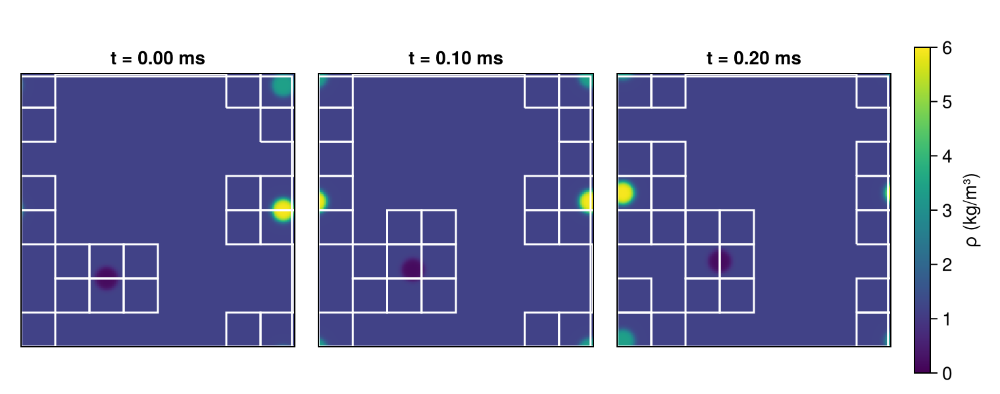
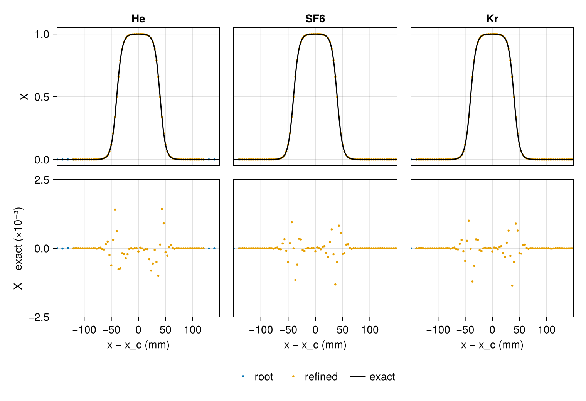

Advected bubbles
A uniform wind carries what it holds unchanged. Where the pressure and the velocity are uniform, no force acts on the gas, and each parcel keeps its composition and temperature as it moves; without diffusion the solution at time $t$ is the initial state shifted by $\mathbf{U} t$. Between two gases of different heat-capacity ratio $\gamma$ this is a demanding test for a conservative scheme: Abgrall (1996) showed that such schemes generally produce spurious pressure oscillations where the composition, and with it $\gamma$, changes across a moving interface.
This tutorial carries three bubbles through air in a periodic box: helium and krypton, with $\gamma = 5/3$, and sulfur hexafluoride, with $\gamma$ close to 1.1, against 1.4 for air. A refined level made of tiles follows each bubble, across the periodic faces, and after the wind has carried them 60 mm each bubble is compared with its initial shape.
using CompactLES # re-exports MPI
MPI.Initialized() || MPI.Init(threadlevel=:funneled)
using CairoMakie
using Printf
CairoMakie.activate!(type = "png")Gases
All four gases are at atmospheric pressure and 300 K, and as in Acoustic interface, IdealMixture holds each heat capacity at its room-temperature value. No transport model is given, so the gases do not diffuse into one another.
names = ["Air", "He", "SF6", "Kr"]
eos = IdealMixture(names)
p0, T0 = 101_325.0, 300.0
for name in names
gas = thermodynamic_state(eos, Prim(Y = mass_fractions(eos, name => 1.0; basis = :mole),
p = p0, T_ion = T0))
@printf("%-4s ρ %6.3f kg/m³, γ %.3f, c %6.1f m/s\n", name, gas.rho, gas.gamma, gas.c)
endAir ρ 1.177 kg/m³, γ 1.400, c 347.2 m/s
He ρ 0.163 kg/m³, γ 1.667, c 1019.1 m/s
SF6 ρ 5.933 kg/m³, γ 1.094, c 136.7 m/s
Kr ρ 3.404 kg/m³, γ 1.667, c 222.7 m/sHelium is seven times lighter than air, and krypton and SF6 are three and five times heavier.
Bubbles
The box is 0.96 m on a side and periodic in both directions. The wind blows along its diagonal, at 300 m/s along each axis. The calculation is two-dimensional, so each bubble is a column of gas seen end on. Its radius is 40 mm, and the mole fraction of its gas falls from one to zero across the edge as
\[X = \tfrac{1}{2}\left[1 - \tanh\frac{r - R}{w}\right],\]
with $r$ the distance from the center, $R = 40$ mm and $w = 10$ mm. Air fills the rest. The distance is measured the short way across the periodic faces, so a bubble that reaches a face continues from the opposite one. The function bubble below gives the mole fraction of bubble b at any point and time; at $t = 0$ it is the initial state, and at later times the exact solution.
The centers of the two bubbles on the right start 40 mm from the face at $x = 0.96$ m, and that of the krypton bubble 40 mm from the face at $y = 0.96$ m as well, so during the run the wind carries the SF6 bubble across one face and the krypton bubble across a corner.
L = 0.96
U = 300.0
R, w = 0.04, 0.01
centers = ((0.30, 0.24), (0.92, 0.48), (0.92, 0.92)) # He, SF6, Kr
wrap(d) = d - L * round(d / L) # the separation across the periodic faces
function bubble(b, x, y, t)
r = hypot(wrap(x - centers[b][1] - U * t), wrap(y - centers[b][2] - U * t))
return (1 - tanh((r - R) / w)) / 2
endThe initial condition is a function of position: every point is at $p_0$ and $T_0$ and moves with the wind. Layers would blend the gases over three spacings of the grid that holds each point, a width that differs between the root grid and the refined level, and its shapes do not continue across a periodic face.
function initial_state(x, y, z)
X = ntuple(b -> bubble(b, x, y, 0.0), 3)
return Prim(Y = mass_fractions(eos, "Air" => 1 - sum(X), "He" => X[1],
"SF6" => X[2], "Kr" => X[3]; basis = :mole),
p = p0, T_ion = T0, u = (U, U, 0.0))
end
problem = Problem(
name = "advected bubbles",
eos = eos,
domain = ((0.0, L), (0.0, L), (0.0, 1.0)),
bcs = (PeriodicBC(), PeriodicBC(), PeriodicBC()),
ic = initial_state,
)Tiles
The root grid has 96 nodes in each direction, 10 mm apart, so the edge of a bubble, about $2w$ wide, spans two root spacings. On the refined level the spacing is 3.3 mm and $w$ is three spacings.
The edge of each bubble is a jump in density, which the density criterion of Imploding shock marks. There one refined box covered every marked node; here one box would have to span all three bubbles. With tile = 12 the solver instead covers the marked nodes with the tiles of a fixed lattice, 12 root spacings on a side, each tile a patch of the refined level. At every regrid check, four steps apart as there, it adds the tiles the bubbles move into and removes those they have left. subcycle keeps its default, so both levels take the step the refined level allows. level_regions lists the tiles of a level.
amr = AMR(tile = 12)
solver, states = setup(problem, Numerics(n_global = (96, 96, 1), amr = amr))
@printf("%d tiles of %d\n", length(level_regions(solver, 1)), (96 ÷ 12)^2)20 tiles of 64Run
The run ends when the wind has carried the bubbles 60 mm in each direction. One callback records, every ten steps, the largest departure of the pressure from $p_0$ over the nodes of every patch; another draws the density and the tile outlines halfway. mass_of integrates the partial density $\rho Y$ of one gas over the composite grid: field_array returns one array per patch, and volume_integral combines the levels, as in Imploding shock.
t_end = 0.06 / U
fig = Figure(size = (760, 300))
axes = [Axis(fig[1, i], aspect = DataAspect(), title = @sprintf("t = %.2f ms", 1e3t))
for (i, t) in enumerate((0.0, t_end / 2, t_end))]
function draw!(ax, solver, states)
fieldheatmap!(ax, solver, states, :rho; colorrange = (0, 6), colormap = :viridis)
meshplot!(ax, solver; grid = false, color = :white)
limits!(ax, 0, L, 0, L)
hidedecorations!(ax)
end
draw!(axes[1], solver, states)
mass_of(sp) = volume_integral(solver, map(.*, field_array(solver, states, :rho),
field_array(solver, states, :Y; species = sp)))
mass0 = [mass_of(sp) for sp in eachindex(names)]
pressure_departure = Ref(0.0)
record = Callback(EveryStep(10), function (solver, states)
for snap in field_snapshot(solver, states; fields = (:p,))
pressure_departure[] = max(pressure_departure[], maximum(abs, snap[:p] .- p0) / p0)
end
nothing
end)
halfway = Callback(AtTime(t_end / 2), function (solver, states)
draw!(axes[2], solver, states)
nothing
end)
run!(solver, states; tfinal = t_end, nmax = 2_000, callback = (record, halfway))
@printf("%d steps, %d tiles at the end\n", solver.step, length(level_regions(solver, 1)))246 steps, 23 tiles at the endThe panels show the density, drawn inside the white tile outlines at the refined spacing. Helium is the dark bubble and SF6 the brightest, and the wind blows toward the upper right.
draw!(axes[3], solver, states)
Colorbar(fig[1, 4], limits = (0, 6), colormap = :viridis, label = "ρ (kg/m³)")
fig
The tiles move with the bubbles. Halfway through the run the SF6 bubble is crossing the face at $x = 0.96$ m, and the krypton bubble, crossing the corner, is split among the four corners of the box.
Pressure
The largest departure of the pressure from $p_0$ at any node, over the whole run, relative to $p_0$:
@printf("max |p − p₀|/p₀ = %.1e\n", pressure_departure[])max |p − p₀|/p₀ = 4.8e-14The pressure stays uniform to round-off. All four gases here share one temperature. With the helium at 600 K and the same pressure, the pressure departs from $p_0$ by up to 0.2% as that bubble moves; with a bubble of air at 600 K in its place, by up to 0.002%.
Shape
The profiles below run through the center of each bubble at the end, parallel to $x$, in the frame of the bubble. field_snapshot with normal = 2 returns the nodes at one root index along $y$ on each patch that reaches them, the refined ones at their own spacing; the root nodes a tile covers are dropped. The lower panels show the difference from the exact solution.
h = L / 96
bubble_names = ("He", "SF6", "Kr")
fig = Figure(size = (760, 520))
for b in 1:3
xc, yc = mod.(centers[b] .+ U * solver.t, L) # the center at the end
top = Axis(fig[1, b], title = bubble_names[b], ylabel = b == 1 ? "X" : "")
bottom = Axis(fig[2, b], xlabel = "x − x_c (mm)", xticks = -100:50:100,
ylabel = b == 1 ? "X − exact (×10⁻³)" : "")
for snap in field_snapshot(solver, states; fields = (:X,), normal = 2,
index = round(Int, yc / h) + 1)
show = .!vec(snap.covered)
x, y = snap.coords[1][show], only(snap.coords[2])
X = vec(snap[:X][:, :, :, b + 1])[show]
dx = 1e3 .* wrap.(x .- xc)
color = Makie.wong_colors()[snap.level + 1]
label = snap.level == 0 ? "root" : "refined"
scatter!(top, dx, X; color, markersize = 4, label)
scatter!(bottom, dx, 1e3 .* (X .- bubble.(b, x, y, solver.t)); color,
markersize = 4)
end
xs = range(-150, 150; length = 400)
lines!(top, xs, [bubble(b, xc + 1e-3s, yc, solver.t) for s in xs], color = :black,
label = "exact")
xlims!(bottom, -150, 150)
ylims!(bottom, -2.5, 2.5)
linkxaxes!(top, bottom)
hidexdecorations!(top, grid = false)
b > 1 && (hideydecorations!(top, grid = false); hideydecorations!(bottom, grid = false))
end
Legend(fig[3, 1:3], content(fig[1, 1]), orientation = :horizontal, framevisible = false,
unique = true)
fig
The largest difference from the exact solution at any node of the composite grid, and the largest mole fraction of each bubble gas:
snaps = field_snapshot(solver, states; fields = (:X,))
for b in 1:3
worst, peak = 0.0, 0.0
for snap in snaps
x, y = snap.coords[1], snap.coords[2]
for j in eachindex(y), i in eachindex(x)
snap.covered[i, j, 1] && continue
X = snap[:X][i, j, 1, b + 1]
worst = max(worst, abs(X - bubble(b, x[i], y[j], solver.t)))
peak = max(peak, X)
end
end
@printf("%-4s max |X − exact| %.1e, max X %.4f\n", bubble_names[b], worst, peak)
endHe max |X − exact| 1.7e-03, max X 0.9995
SF6 max |X − exact| 1.3e-03, max X 0.9996
Kr max |X − exact| 1.4e-03, max X 0.9996The largest differences lie at the edge of each bubble, where the profile is steepest. On a uniform grid at the refined spacing they are 0.0013 to 0.0014. On the root grid alone, where $w$ is one spacing, they are 0.09 to 0.11, and the mole fraction of SF6 overshoots one by 0.005.
Away from the edges the difference is at most $4 \times 10^{-5}$ beside the helium bubble and $1.3 \times 10^{-5}$ beside the others, against $4 \times 10^{-6}$ on the uniform grid at the refined spacing. Under a tile the root nodes hold the tile's solution, whose edge is too sharp for the root grid, so the root's filter pass leaves out the covered nodes near the edge. A pass over them as well spreads disturbances of up to 0.0016 along the root's lines and from there through the tile boundaries onto the refined nodes.
Mass
The relative change of the mass of each gas over the run, and of the total:
mass1 = [mass_of(sp) for sp in eachindex(names)]
for (sp, name) in enumerate(names)
@printf("%-5s %8.1e\n", name, mass1[sp] / mass0[sp] - 1)
end
@printf("total %8.1e\n", sum(mass1) / sum(mass0) - 1)Air 1.1e-08
He -1.1e-06
SF6 7.2e-07
Kr -1.6e-06
total 4.6e-09A uniform grid conserves the mass of every gas to round-off. The refined run does not, since neither the transfers between the levels nor the interpolation into newly covered nodes is conservative, and the mass of each gas changes by up to $2 \times 10^{-6}$.
What this checks
- While a uniform wind carries bubbles of helium, SF6 and krypton through air, the pressure stays uniform to round-off across interfaces between gases of heat-capacity ratio 1.1 to 5/3 at a common temperature.
- On the refined level each bubble matches the exact solution, its initial shape shifted by the wind, to within 0.002 in mole fraction, close to a uniform grid at the refined spacing.
- The tiles of a refined level follow three separate features across the periodic faces of the domain. Around an edge too sharp for the root grid the refined run stays within $4 \times 10^{-5}$ in mole fraction of the exact solution away from the edges, and the mass of each gas changes by up to $2 \times 10^{-6}$.
This page was generated using Literate.jl.